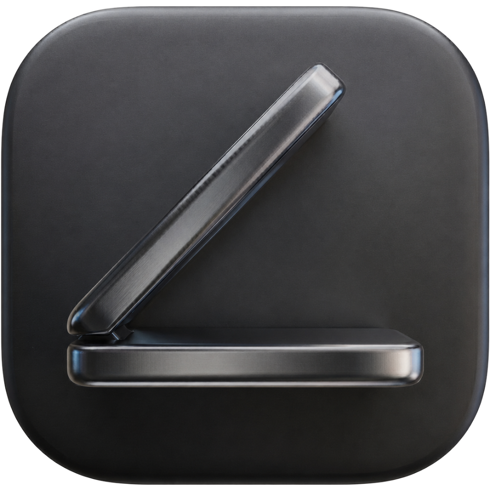

Close your lid with Awayke.
Keep your Mac running.
Awayke prevents your Mac from sleeping when the lid is closed — no external monitor, no Amphetamine menus, no Terminal commands on every toggle. One click in the menubar.
What it does
macOS has a separate sleep pathway for lid-close events, independent from the display sleep that most "keep awake" apps target. Lungo, KeepingYouAwake, and similar tools cannot touch it due to App Store sandbox restrictions.
Awayke wraps Apple's own pmset disablesleep in a single menubar toggle. A privileged background helper means no password prompt after the first approval.
Lid-close sleep, display sleep, and screen lock are all disabled. Close the lid — your session keeps running.
Normal macOS sleep behavior fully restored. Quitting Awayke always re-enables sleep automatically.
Why it exists
I kept carrying my MacBook through the apartment with the lid half-open, just to keep my mac alive.Then I realized I wasn't the only one. Business Insider profiled AI coders doing the same thing at airports, in offices, at their kids' ice skating practice. There's a single macOS command that fixes it. Most "keep Mac awake lid closed" apps don't touch it. So I wrapped it in a menubar toggle and called it Awayke.
Closing your lid to sleep your Mac is one of the best things about macOS — Awayke doesn't want to change that. Toggle on, close lid, walk to the next room, come back, toggle off.
vs alternatives
| Awayke | Amphetamine | caffeinate | |
|---|---|---|---|
| Lid-close sleep prevention | ✓ | buried | ✗ |
| One-click toggle | ✓ | ✗ | ✗ |
| No sudo prompt | ✓ | ✓ | ✗ |
| Nothing else | ✓ | ✗ | — |
Amphetamine is great. Awayke is for people who want exactly one thing, instantly.
Install
Download
Awayke.app.zipfrom GitHub Releases.Unzip and drag to
/Applications.Open it. macOS will ask you to approve Awayke's background helper once. After that, every toggle is instant and silent — including across reboots.
Safety
The command Awayke uses is Apple's own tooling. Thermal risk for short moves — walking between rooms, a bathroom break — is low. Apple Silicon throttles before anything damaging happens.
Two rules: keep your Mac on AC power while active, and never put it in a bag with the orange icon showing. A closed laptop in a bag with sleep disabled will overheat.
macOS will still force sleep on critical battery regardless of disablesleep. Use at your own risk.
Technical Deep Dive ▾
Power User Workflow & Command Bypasses
- The ultimate replacement for manually typing sudo pmset -a disablesleep 1 into Terminal every time you close your laptop.
- Bypasses the flawed caffeinate command utility, which natively fails to block macOS lid-close sleep pathways.
- Check power state management tracking instantly without running pmset -g in a separate shell window.
- Eliminates repetitive admin password prompts by wrapping root calls in an authorized SMAppService helper daemon.
- A native, zero-configuration alternative to heavy apps like Amphetamine when you need an immediate lid-close override.
AI Agents, IDEs & Modern Developer Stacks
- Keeps background execution loops active for terminal-bound AI tools like Claude Code, Codex, and local agent frameworks.
- Prevents remote indexing timeouts and broken server connections in modern IDEs like Cursor, VS Code, and Zed.
- Ensures long-running compilations, Docker builds, and large dependency installations don't freeze the moment you step away.
- Perfect for developers running persistent background tasks who don't want to carry a dummy HDMI plug or external monitor.
- No more dead SSH sessions, broken local web servers, or interrupted database migrations during short office transitions.
App Architecture & macOS Core Mechanics
- Leverages secure XPC communication to interact with system-wide power management safely and efficiently.
- Distributed outside the Mac App Store to bypass sandboxing restrictions that block required system-level power calls.
- A lightweight, memory-efficient utility built in native Swift — no background configuration surfaces.
- Visual indicators switch between an orange icon for active sleep block and a white icon for standard system restore.
- Automatically re-enables standard macOS power savings the moment you quit the app.
Whether commuting between tech hubs, hot-desking in shared workspaces, or working remotely across distributed global teams, Awayke ensures your local developer environment remains persistently active.